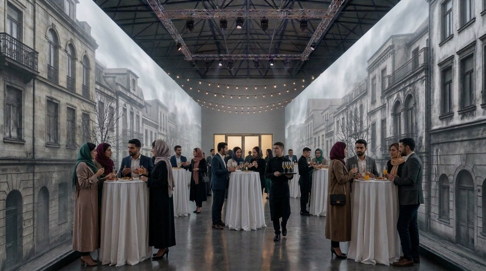
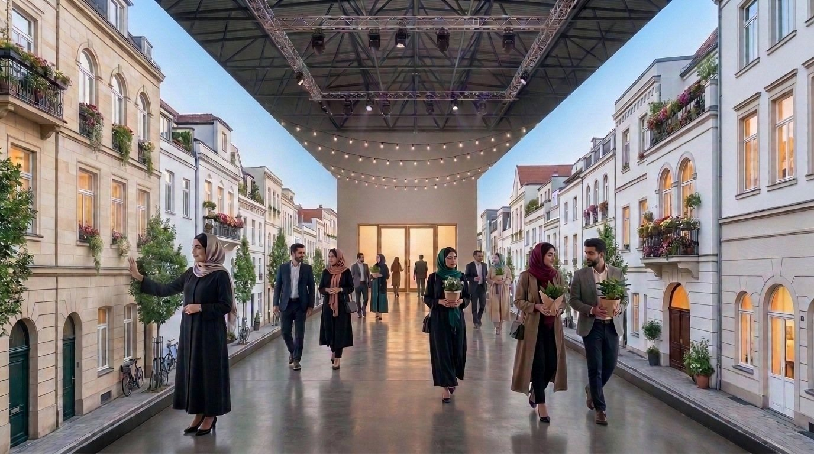
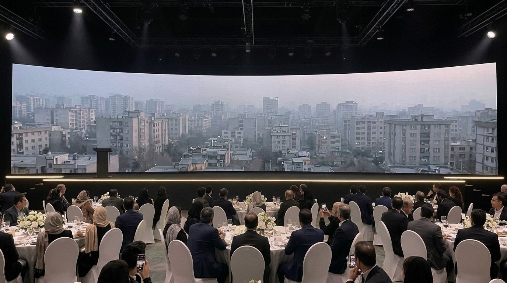
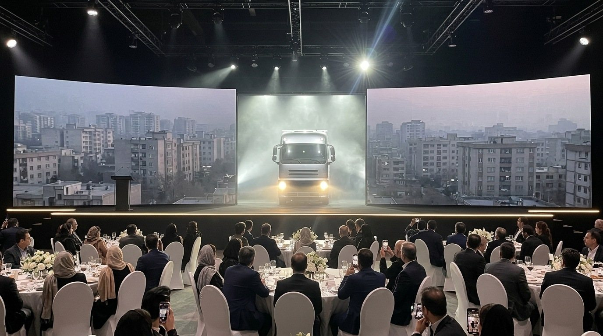
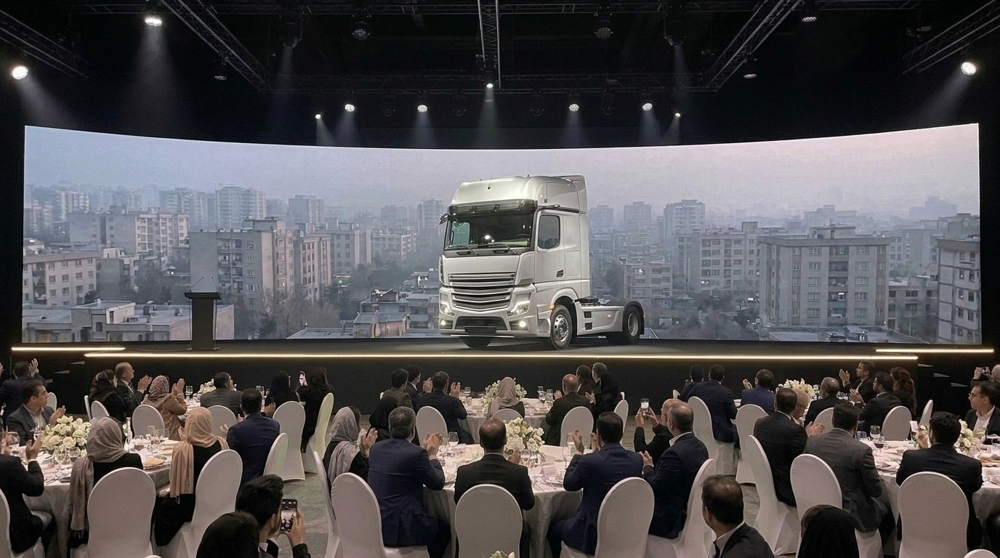
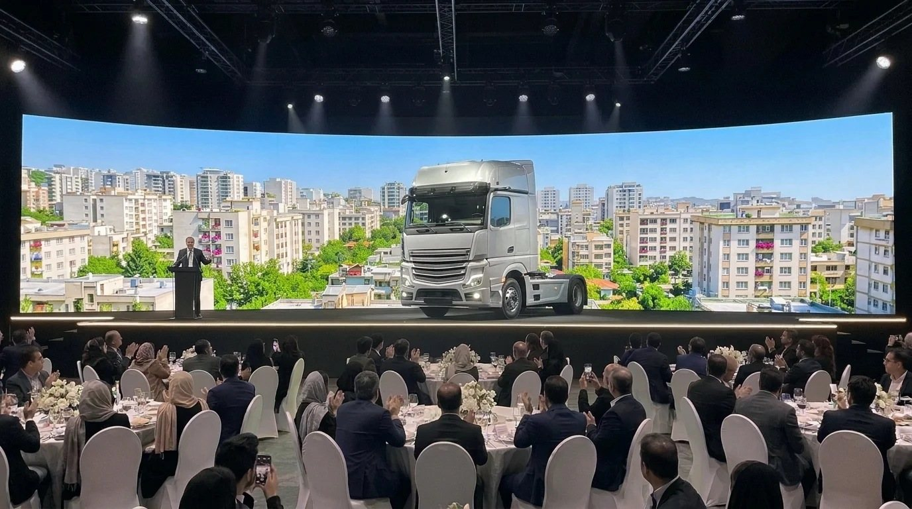

The City’s Fresh Breath
Scroll to walk through the nightThe launch night of the Titan Diesel hybrid tractor. Diesel on the road, electric in the city.
A pulse that takes a breath
The mark of the night is a single line. It starts flat, like a busy grey city, beats twice — the hybrid pulse — and rises into a leaf: the city taking a fresh breath.
The same line runs through everything the guests see: the tunnel they walk through, the reveal on stage and the street they leave by.
Outside the city, diesel.Inside the city, electric.One tractor, one fresh breath.


Guests walk in through a grey city
Both walls of the tunnel are one smoggy street, live and touchable.
…and walk out through a clean one
The same street, the same walls — now bright, green and breathing.
Check-in
Guests arrive at a long graphite counter in front of a dark wall. The city is hidden behind it; the only light is the identity of the night. Two doorways, one at each end, lead into the tunnel.
The tunnel — a grey city you can touch
Both walls of the tunnel are interactive LED screens showing a real residential street, grey with smog. This is the social space of the night: standing tables, welcome drinks, waiters with trays — and a city that answers every hand that touches it.
Every effect stays on the surface of the screen — nothing leaves the wall.
Grey to green, in one photo
Halfway down the tunnel, a photo set built from the idea itself: one half is a grey facade with a rusty air conditioner and hanging cables, the other half the same facade grown green. The pulse line runs across in light and ends in the leaf. Guests stand on the border.
The hall and the reveal
Guests take their seats at round tables around a wide raised stage. Behind it, one curved LED wall shows the same grey city they just walked through. Then, in five minutes, the night turns.




The grey city
The hall dims. Only the city on the wall, and the haze over it.
The wall opens
A 6 m gate in the screen slides apart. The real tractor rolls out on electric, in silence.
On the stage
It stops at the centre of the stage. Behind it, the wall closes.
The city breathes
The smog lifts, the street turns clean and green. The speeches begin.
Dinner at the same tables
The buffet opens beside the hall. Guests serve themselves and return to their tables, with the tractor still lit on stage in front of the clean city — the photo everyone takes.
The way out — the same street, breathing
Guests leave the way they came, but the tunnel has changed: the same street is now bright, clean and full of flowers. It still answers every touch. At the counter outside, each guest takes home a small potted plant.
One hall for the whole night
Everything fits in about 1,500 m². Guests never walk back through the same mood: grey on the way in, clean on the way out.
- Check-in foyer210 m²
- The tunnel240 m²
- Main hall and stage670 m²
- Behind the LED wall170 m²
- Buffet110 m²
- Kitchen and service100 m²
Diesel on the road, electric in the city. One journey, two powers.